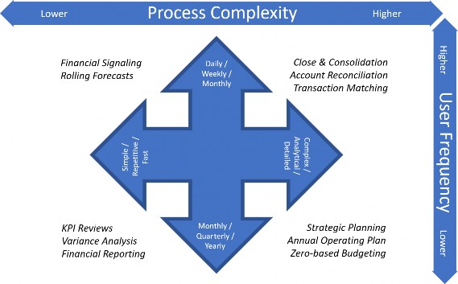
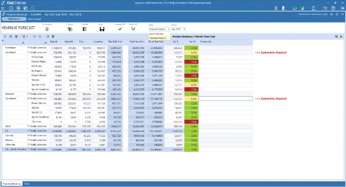
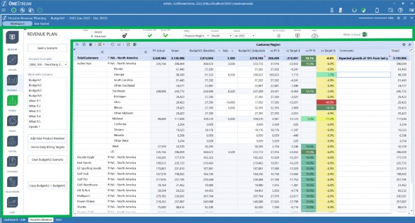
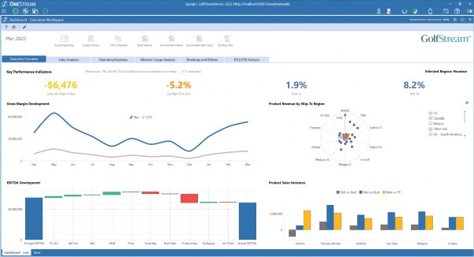

Keeping The User in Mind
The OneStream platform can be home to a nearly unlimited set of distinct but interrelated processes – Financial Close, Account Reconciliations, Reporting and Analysis, Budgeting, Forecasting, Sales and Operational Planning, plus many more. Even within the specific context of any one of these processes, different Users will have different interests, skills, responsibilities, and frequency of interaction.
For any User community and process, the ‘right’ User Experience will be the one that provides the correct balance between functionality, time to train, and ease of use. So, let’s consider, for example, a typical annual operating plan process.
There will probably be a small number of individuals responsible for managing this process. They might be responsible for seeding the Base-level version of the plan and managing the global assumptions and drivers. They will be monitoring Workflow completion statuses as each individual department head approaches their deadlines, locking plan Scenarios as they are completed, and more.
From an application administration perspective, these responsibilities primarily involve defining and assigning tasks and their associated due dates and dependencies; scheduling or manually running Business Rules, Data Management sequences, and Consolidations; verifying the successful completion of various Workflows; and other tasks that, by definition, involve managing the Planning process as a whole. These Users won’t have much need for the kind of granular data entry, financial reporting, and variance analysis functionality that will be required by the department heads and operational Planners who are responsible for building the detailed, bottom-up plan.
And, by the very nature of an ‘annual’ process, our hypothetical Planning Process Managers will most likely be laser-focused on these duties for a few weeks or months, and then, when the Planning cycle is complete, move on. It may be close to a year before they revisit the system.
What would be the ideal User Experience for them? Preferably, they would be able to see – at a glance – the status of the process as a whole. They will also need to easily review any areas of concern, identifying missed deadlines or incomplete tasks. From a data perspective, they will need to easily initiate and verify the successful completion of data integrations, top-down allocations, Consolidations, and other global actions that impact the entire plan.
Based on these requirements, when these Users sign on to the application, they would be best served by a home page with relevant statistics about the progress of the overall Planning process, with clearly marked buttons to launch the background tasks they are responsible for, and intuitive navigation to the more detailed information they will need to monitor the timeliness and successful completion of the full Planning cycle.
Let’s also think about how much time a User spends with the application. As we tailor the User Experience to balance the appropriate mix of functionality and ease of use, we need to consider the varying patterns of usage that different processes require throughout the year. Some Users will have relatively short periods of very intense activity for a few weeks or months, and then have very little interaction for long periods of time – say, a Manager who is responsible for contributing to an annual operating plan, or a Sales Executive who revises a Revenue Forecast once a quarter. Other Users will return to the application every month or week or even every day – for example, the Users who are responsible for the monthly Financial Close, or those who monitor daily bookings versus plan.
A User who spends a great deal of time in the application will often prioritize efficiency over simplicity. These highly active, frequent Users will probably be willing to spend a little more time learning to navigate a set of content-rich screens that provide ‘one-stop shopping’ in order to access the multiple Workflows and Reports they access every day.
On the other hand, their colleagues who interact with the system only a few times a year will probably appreciate a simpler interface, with large, clearly-labeled buttons providing self-explanatory navigation.
Keeping The User in Mind
Your Users’ Interactions: How Complex, and How Often?
We can think of these two fundamental aspects of End-User interaction – the complexity of the tasks our Users are performing, and the frequency of those interactions – as two axes on a chart. We can plot our application’s various processes in their relative positions on this chart, with highly complex, frequently occurring processes in the upper-left and simpler, more sporadic interactions in the lower-right. Here’s a possible example:

Figure 2.1
Sketching out a chart like this can help give us a sense of what our priorities should be when planning the User Experiences for each of these processes (and, if appropriate, for the various User roles within each of these processes).
As an example, we might be implementing a Rolling Forecast process, with largely pre-loaded, automatically-generated data provided by source system integrations and Business Rules. Our Forecast Users in our Sales organization will typically make a few manual adjustments or explanatory comments each week or month, then mark their Workflow complete.
For this process, we will design a User Experience that prioritizes efficiency, so the User can easily navigate to the handful of Forms that might require attention this month, and make their adjustments with as few clicks as possible. We can accomplish this by including as much of the most frequently updated information as possible on the User’s home screen. Since this is a familiar part of the User’s monthly routine, we won’t take up valuable screen real estate with instructions, navigation buttons, etc. For this User, we might provide a home page that looks something like Figure 2.2.

Figure 2.2
On the other hand, preparing the Annual Operating Plan might require much more User interaction across a broad assortment of interrelated but functionally distinct moving pieces. Product- and region-level revenue planning, cost center expenses, capital expenditures, headcount and salary planning, and many other components of the total plan will each have their own requirements, levels of granularity, purpose-driven productivity helpers, and Workflows. On our scale of process complexity, this might score very high. But on the scale of User frequency, this will be very low – our Planners will have a lot to do, much of it quite complex, but they will only be active with these parts of the application once a year.
For a process like this, we should design a User Experience that prioritizes ease of use, with self-explanatory navigation, function-specific data entry Forms appropriate to each of the components of the plan, and strategically-placed explanatory labels to guide the User through multiple steps. And, while we design this User Experience, we will need to be sensitive to the confusion, frustration, and even eye strain that can result from trying to fit everything on one screen. For this User, we might provide a home page that looks something like Figure 2.3.

Figure 2.3
Notice that in this example, although the process is functionally similar to the Rolling Forecast, our Annual Operating Plan Users are provided with many additional controls, navigation buttons, and links to relevant reporting and modeling tools (outlined above in green). With this additional functionality, the Planning Process User Experience – while more detailed and time-consuming than the Forecast – will be just as intuitive and efficient.
It’s clear that we will need to provide different User experiences based on the varying requirements of our multiple User communities. Let’s step back and think about how we will accomplish this.
Keeping The User in Mind
The OneStream Platform
As we mentioned earlier, OneStream is a true ‘platform’, and this platform provides remarkable flexibility and capabilities that can be leveraged when tailoring a User Experience. By ‘platform’, we mean that virtually anything an End-User sees or does can be configured to look, feel, and behave exactly as you want.
Out-of-the-box, OneStream provides a powerful, well-thought-out, feature-rich, standard User Interface. A large, complex implementation incorporating multiple concurrent daily, weekly, monthly, and yearly processes, such as the Financial Close cycle, Strategic Planning, environmental, social and governance reporting, profitability analysis – and countless others – can and should live side by side. They should share the Components they have in common, with each process configured to meet their own precise, specific business requirements.
OneStream’s platform provides a comprehensive set of Components that can be easily configured to handle nearly any required User Interaction for any of these processes. Cube Views are used whenever you need to present multidimensional information in rows and columns, and can display this information in a multitude of formats – data entry Forms, real-time spreadsheet retrievals, highly-formatted Reports, and more. Workflows are defined to guide and control processes with multiple Users collaborating across the organization, ensuring the completeness and quality of the information that is being collected, derived, and shared. Data Management sequences, Business Rules, Report Books – all of these highly-configurable Components (and more) are available to address the unique requirements of your organization.
We’ll get into much more detail on these Components in later chapters, but for now, just keep in mind that these Components, and the standard User navigation provided out-of-the-box by the OneStream platform, can almost certainly meet any functional requirements you will encounter.
But there’s more.
Keeping The User in Mind
The Magic of OneStream Dashboards
One of the most powerful tools provided by the OneStream platform is the ability to create your own custom-designed Dashboards.
First, a word about terminology. Through your experiences with other software, you may be familiar with the concept of ‘dashboards’ as User-facing screens providing real-time information through reports, charts, graphs, gauges, traffic lights, and other visualizations. With OneStream, you can (and probably will) create this type of ‘Business Intelligence’ Dashboard, too – and these are among the most popular and useful Dashboards in many implementations.

Figure 2.4
What we call ‘Dashboards’ in OneStream, though, go far beyond this. Yes, with OneStream Dashboards, you can configure attractive, intuitive screens to present information in formats appropriate to Users at any level in the organization, but OneStream Dashboards also give you the power to control the look and feel of any aspect of the End-User experience.
With these Dashboards, we can provide clean, professional home pages with big buttons, simplified navigation, and gorgeous Executive KPI reviews. We can give our Users mission-specific data entry screens with powerful, custom-configured User-productivity tools a mouse-click away. We can surface and highlight the application controls that are most important to a specific community of Users, without cluttering their screens with controls they are unlikely to need or use.
It is with these Dashboards that we provide Users with the ‘ATM experience’ where appropriate, the ‘Airline Cockpit’ experience where needed, and virtually any other User Experience our application might require.
In addition, OneStream also provides numerous Dashboard templates and reference examples via online channels such as OneStream University training classes and the OneStream Solution Exchange, which means that – more often than not – you have a starting point and don’t always have to begin your dashboarding journey from scratch.
In the next chapter, we will dig deeper into the concepts and capabilities behind these Dashboards, as well as Cube Views, Reports, Spreadsheets, and the many other moving pieces available to you in this powerful platform, and see how they come together in your application to form truly world-class User Experiences!